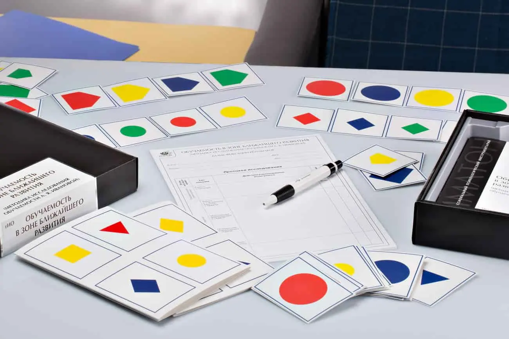
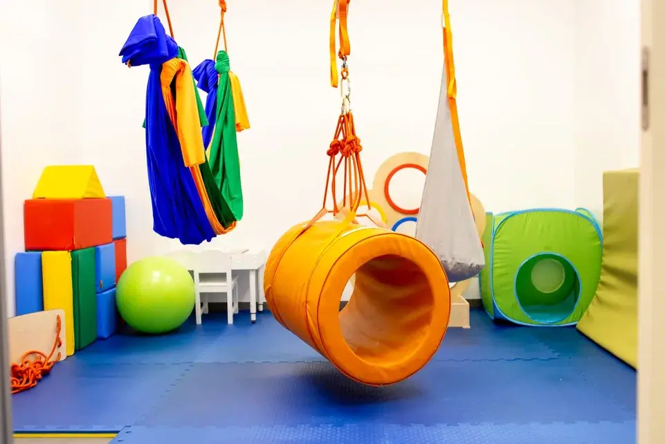

Диагностикой развития детей от 0 до 3 лет — это научно обоснованный подход. Данная диагностика проводится междисциплинарными специалистами Службы ранней помощи. Диагностика предназначена для детей и будет полезна для родителей, обеспокоенных развитием своего ребенка в данном возрасте.
Она позволяет оценить текущее развитие и сформировать план на будущее, помочь ребенку преодолеть трудности, выстроить отношения в семье, дает практические советы родителям по взаимодействию с ребенком и его развитию. Данную диагностику могут предложить пройти как врачи (педиатры, неврологи, психиатры), так и представители других специальностей.
Методика оценки речевого и коммуникативного развития детей раннего возраста. Методика представлена двумя опросниками. После изучения полученной от родителей информации специалист составляет заключение. Это подробный профиль речевых и коммуникативных навыков ребёнка и рекомендации по их развитию.
Узнать подробнееОдна из методик «золотого стандарта» оценки развития детей, которая широко применяется в мировой клинической практике. Комплексная диагностика развития ребенка позволяет оценить познавательное, речевое и моторное развитие, а также социально-эмоциональное развитие и адаптивное поведение.
Узнать подробнееДенверская модель раннего вмешательства — это методика помощи детям с РАС (расстройство аутистического спектра). Методика доказала свою эффективность и широко применяется в ведущих центрах мира. В основе метода — игровая деятельность, которая позволяет трансформировать любые повседневные, режимные моменты и процедуры в эффективные техники игрового взаимодействия, общения и обучения ребенка необходимым навыкам.
Аутизм (расстройство аутистического спектра, РАС) — это психоневрологическое нарушение, которое может включать в себя большое количество симптоматики. Такой ребенок искаженно воспринимает сенсорные стимулы, которые поступают из внешнего мира, и, как следствие, может ярко реагировать на одни и практически игнорировать другие. Нередко это сопровождается ухудшением свойств речи и мышления.
Причина возникновения данного заболевания до конца не изучена. Однако проявления РАС часто можно заметить на первом году жизни ребенка, когда он, к примеру, не отзывается на свое имя или не взаимодействую с окружающими, не реагирует на эмоцию родителя, к примеру, не улыбается в ответ на улыбку.
Нередки случаи, когда у ребенка происходит резкий регресс формирующихся навыков, и он перестает делать то, чему уже успел научиться. Так как проявления РАС многогранны, то при постановке диагноза важна грамотная диагностика.
Центр когнитивных технологий предоставляет ряд надежных диагностических методик, которые помогают точно определить наличие или отсутствие РАС у ребенка, а также корректно выстроить маршрут коррекции. Ниже Вы можете подробнее ознакомиться с методиками диагностики и коррекции, а также пройти скрининговый онлайн-опросник для оценки риска РАС — M-CHART-R (не предназначен для итоговой постановки диагноза).
Скрининговый тест, позволяющий оценить риск аутизма и расстройств аутистического спектра (РАС).
Вы можете пройти бесплатный онлайн-тест M-CHAT-R на выявление у ребенка первых признаков аутизма в возрасте от 18 месяцев до 2–2,5 лет.
Внимание! Результаты теста не являются итоговым диагнозом. При любых вопросах или сомнениях, пожалуйста, проконсультируйтесь со специалистом.
Пройти тестЭто социально-коммуникативный опросник при аутизме. SCQ — это скрининговая методика, которая помогат выявить симптомы, связанные с расстройством аутистического спектра.
SCQ использует и с целью дифференциации диагноза: она может быть применена перед использованием методики ADOS. Учитывая простоту использования и скорость проведения, данная методика является отличным инструментом для оперативного скрининга.
Узнать подробнееШкала диагностического обследования при аутизме, которая является международным «золотым стандартом» тестовой диагностики расстройств аутистического спектра. Методика позволяет с высокой точностью определить наличие расстройства аутистического спектра и степень его выраженности. Базовая цель диагностики — перевод особенностей поведения в цифровые показатели. ADOS-2 разработана ведущими американскими и британскими специалистами. Сегодня Шкала диагностического обследования применяется во всём мире.
Узнать подробнееИнтенсивная обучающая программа, которая основана на поведенческих технологиях и методах обучения. ABA — терапия имеет надежную и обширную доказательную базу, которая подтверждает эффективность методики для помощи детям с особенностями развития.
Цели данной терапии:
1. Обучение ребенка важным для развития и социализации навыкам (учебным, речевым, социальным, навыкам самообслуживания).
2. Коррекция проблемного поведения (агрессии, криков, самоповреждающего поведения и других).
Компьютерная психодиагностика или комплексная психологическая диагностика — это набор тестов для детального исследования психического состояния. Тестирование как в письменном, так и электронном формате. Диагностика проводится в сопровождении психолога в спокойной и тихой обстановке.
В диагностике используются адаптированные, стандартизированные и надежные методики. Это помогает специалисту составить подробный профиль пациента, с высокой точностью определить его характерные черты, особенности, эмоциональное состояние, качество внимания, памяти и мышления.
По итогам тестирования специалист выдает развернутое заключение с описанием полученных результатов, их интерпретацией и рекомендациями по работе с актуальными задачами в Центре или самостоятельно дома.
Ниже Вы можете ознакомиться с программами компьютерной диагностики, представленными в Центре когнитивных технологий.
Комплекс предназначен как для диагностики уровня готовности ребенка к школьному обучению, так и для оценки адаптации учеников младших классов. Диагностика позволяет понять, насколько ребенок готов к школе, выявить трудности, которые могут возникнуть в процессе обучения, сформировать план по развитию необходимых навыков и умений, а также уделить внимание аспектам, которые помогут ребенку лучше адаптироваться к новой роли ученика и школьной среде.
Комплекс диагностики предназначен для исследования умственного развития подростков. Он оценивает общий уровень эрудированности, сформированности универсальных учебных действий (целеполагание, планирование, контроль и коррекция, оценка, саморегуляция), качество мыслительной деятельности, уровень развития мыслительных операций (сравнение, классификация, обобщение, систематизация и другие).
Данное исследование направлено на помощь старшим школьникам, которые испытывают сложности с профессиональным самоопределением. Диагностика позволяет определить склонности, интересы, черты характера, мотивацию и энергетические возможности нервной системы. Основываясь на результатах, подростку будет проще определиться с будущей профессией.
Комплекс предназначен для исследования личности подростков, черт характера, уровня тревожности, ответственности, агрессивности и других особенностей. Диагностика позволяет определить сильные и слабые стороны подростка, а, значит, улучшить качество его жизни и взаимодействия с социумом.
Комплекс предназначен для подростков. Диагностика позволяет оценить риск развития зависимого поведения на основе личностных характеристик. Кроме того, данное тестирование повышает информированность пациента о проблеме зависимостей.
Сенсорная интеграция — это метод, который позволяет восполнить дефицит сенсорного опыта и гармонизировать работу мозга.
О себе, своем теле и окружающем мире мы узнаем от наших органов чувств. Информацию мозг получает от сенсорных систем: зрительной, слуховой, тактильной, вкусовой, обонятельной, вестибулярной, проприоцептивной (то есть ощущение тела). Поэтому обработка сенсорной информации — это фундамент, на котором строится все наше взаимодействие с собой и миром и, как следствие, дальнейшее развитие.
Нервная система человека похожа на электрическую цепь — все должно работать слажено и эффективно. Если же в одном участке напряжение снижено или наоборот слишком сильно, то может возникнуть «замыкание». Так же и в нервной системе организма.
При нарушении обработки сенсорных сигналов, ребенок начинает искаженно воспринимать окружающее пространство и себя в нем. Это влияет как на текущее качество жизни ребенка, так и на его будущее: способность быстро обучаться необходимым навыкам, умение взаимодействовать с окружающими детьми или взрослыми.
У ребенка могут проявляться лёгкие нарушения сенсорной интеграции или ярко выраженная дисфункция, которая с раннего детства не дает ребёнку успешно развиваться физически и интеллектуально. Если мозг неправильно интерпретирует информацию от органов чувств, то возникают проблемы поведения, обучения, развития речи, координации, мышечного тонуса.
Например, ребенок может быть слишком избирателен в еде, бояться громких звуков и закрывать уши в шумных местах, избегать зрительного контакта, яркого света, прикосновений, бояться испачкаться, не любить игры с пластилином и красками, отличаться неуклюжестью, неловкостью движений, плохо прыгать или не осваивать катание на велосипеде и другое.
Для успешного результата в коррекции сенсорных систем важно понимать в каком направлении работать специалисту и родителю: чувствительность какой из систем снижена или повышена, на что делать акцент во время занятий, как организовать пространство в сенсорном зале и дома.
Обязательным компонентом в формировании правильного маршрута коррекции сенсорных систем ребенка является батарея тестов DeGangi (Германия). Она позволяет выявить нарушения и составить индивидуальный план занятий для формирования правильных сенсорных ощущений. То есть научить ребенка успешно познавать себя и окружающий мир.
Во время встречи, которую проводит невролог и специалист по сенсорной интеграции, ребёнок выполняет практические тесты DeGangi (Германия), младенческий тест TSFI.
Длительность курса сенсорной интеграции зависит от степени нарушения функционирования сенсорных систем и результатов пройденного тестирования. Практический тест диагностики позволяет отследить динамику развития и сенсорных систем ребенка.
Вернуться назад